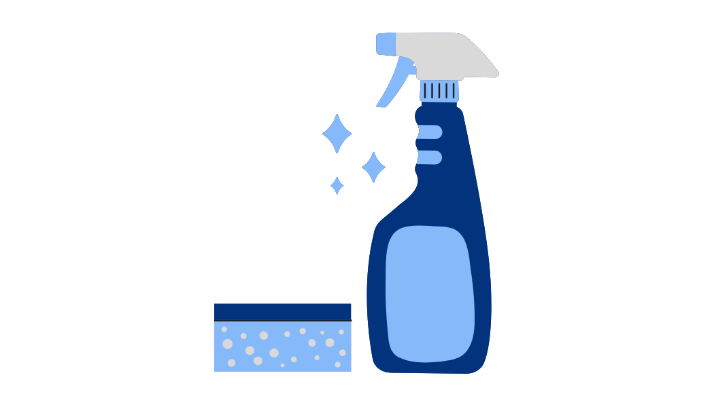
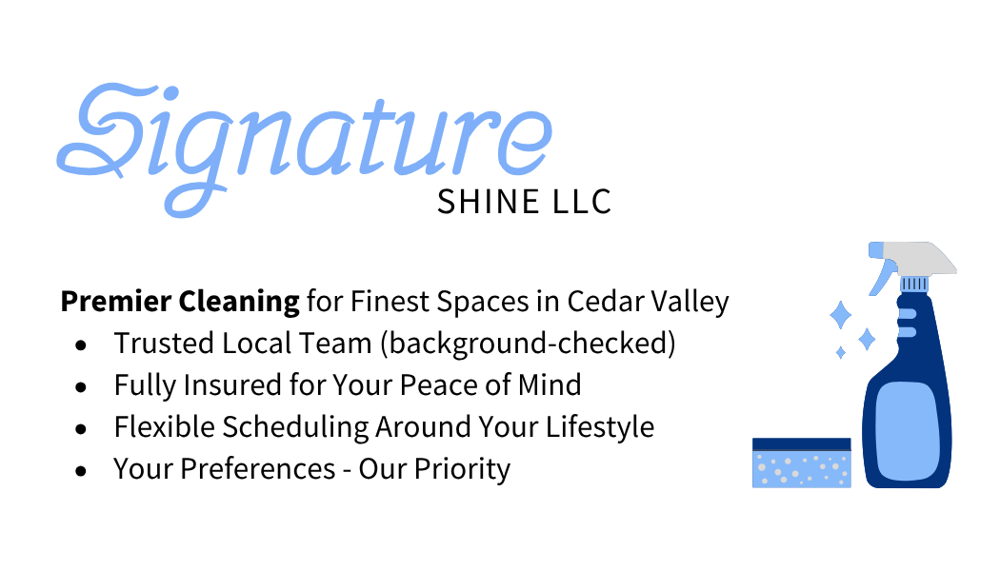

Signature Shine LLC — Case Study
Overview
Signature Shine LLC is a residential and commercial cleaning service I founded in Cedar Falls, Iowa. As a student and an employee, I wanted to experience entrepreneurship firsthand while applying UX thinking to a real service. I chose something practical, high-touch, and realistic to test. The goal was to create an experience that felt personal, reliable, and genuinely relieving for customers. To build it, I used UX research, design thinking, and small marketing experiments.
Problem
Local competitors struggled with consistency, staff retention, and unclear communication around what was included, when cleaners would arrive, and how clients should prepare. The issue was not that different people showed up. The issue was inconsistent quality. That weakened trust. In interviews, many women also expressed feeling like they should be able to manage the cleaning themselves, even when they were already overwhelmed, which added guilt to the experience.
Research
- Interviewed 10+ potential customers about needs, barriers, and how they defined a high-quality service.
- Created a clearer checklist and early booking messages to set expectations before service.
- Reviewed competitor sites and ads to compare messaging, pricing clarity, and service menus.
- Collected feedback immediately after service and again one week later.
Design & Strategy
Brand & Visuals. Built a friendly, trustworthy identity with soft blues, rounded typography, and simple visual elements. Designed leave-behind cards and message templates to make the experience feel consistent.
Service Journey. Mapped the full customer flow from inquiry to quote, checklist, booking, reminders, and follow-up. The goal was to remove uncertainty at every step.
Communication System. Standardized confirmations, reminders, and post-service follow-ups. Added a prep checklist and arrival window to reduce confusion.
A/B Marketing. Tested direct outreach versus general flyers. Direct, personal outreach performed much better, and pricing language that was more explicit helped people move faster toward requesting quotes.
Implementation
- Built a simple CRM in Sheets with tags for new, quoted, scheduled, completed, and follow-up.
- Created a feedback form in Google Forms with NPS and open comments to guide service improvements.
- Documented SOPs for onboarding, quality checks, and handling rework.
Outcomes
- 7+ repeat clients in the first 3 months, creating a more predictable weekly pipeline.
- Approximately 40% higher quality service after revising the checklist and adding a stronger feedback loop.
- Established a measurable system using NPS and comments to guide future improvements.
What I Learned
UX is not limited to digital interfaces. Every message, arrival window, checklist, and follow-up shapes the user experience. By applying research and simple systems, I improved trust, reduced friction, and saw clear business impact.
Artifacts
- Brand moodboard and logo in Figma
- Service journey map
- Message templates for confirmation, reminder, and follow-up
- Feedback form and sample responses

Next
Translate the SOPs and messaging into a lightweight booking website with automated reminders, then pilot a referral program with trackable codes to measure word-of-mouth growth.